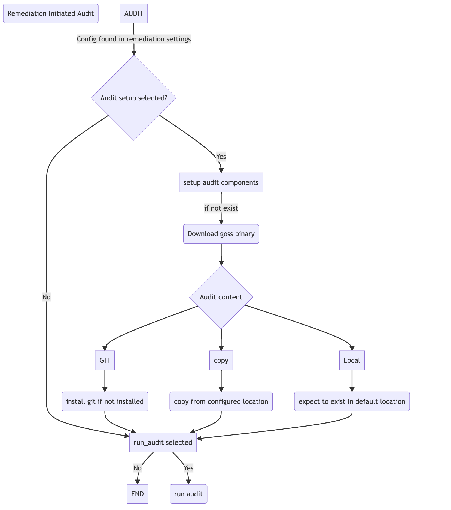

Using Audit and Remediate together
Using both Audit and Remediate in a workflow
{kind=link}

Post Hardening Lockdown Reporting via Ansible_Facts
The etc/ansible/compliance_facts.j2 template metadata and conditions related to hardening performed by the Ansible Lockdown role.
Lockdown Ansible_Facts: Creating Custom Compliance Facts
The playbook conditionally creates a custom facts file on managed hosts to document the applied security benchmark and hardening levels.
lockdown_role/tasks/main.yml
- name: Add ansible file showing Benchmark and levels applied
when: create_benchmark_facts
tags:
- always
- benchmark
block:
- name: Create ansible facts directory
ansible.builtin.file:
path: "{{ ansible_facts_path }}"
state: directory
owner: root
group: root
mode: 'u=rwx,go=rx'
- name: Create ansible facts file
ansible.builtin.template:
src: etc/ansible/compliance_facts.j2
dest: "{{ ansible_facts_path }}/compliance_facts.fact"
owner: root
group: root
mode: "u-x,go-wx"
Key Components
Conditional Execution: The entire block executes only if the variable
create_benchmark_factsis set totrue.Tagging: The tasks are tagged with
alwaysandbenchmark, allowing for selective execution during playbook runs.Directory Creation: Ensures the existence of the directory specified by
ansible_facts_path(typically/etc/ansible/facts.d), setting appropriate permissions.Facts File Creation: Uses a Jinja2 template to generate the
compliance_facts.factfile in the specified directory.
Custom Facts in Role
Ansible allows the use of custom facts to store host-specific information. These facts are typically stored in files within the /etc/ansible/facts.d
directory on the managed hosts. The facts files can be in JSON or INI format and are loaded automatically during the fact-gathering phase.
Accessing Custom Facts
Once the custom facts are in place and facts have been gathered, they can be accessed in playbooks using the ansible_local variable.
{{ ansible_local.compliance.benchmark_version }}
Lockdown Facts Example:
Variables Used
benchmark_version: The version of the CIS/STIG benchmark being applied.CIS
cis_level_1 | cis_level_2: Booleans that indicate if level 1 or 2 hardening is enabled.STIG
stig_cat1 | stig_cat2 | stig_cat3: Indicate whether Category I, II, or III controls were enabled during the hardening process.ansible_run_tags: List of tags used during the playbook run to identify scoperun_audit: Boolean to indicate if an audit was performed.audit_log_dir: Path to local audit log directory on the node.post_audit_results: Captured summary results from post-audit steps.fetch_audit_output: Boolean flag to indicate whether audit logs were centralized.audit_output_destination: Destination directory for centralized audit files.
CIS
[lockdown_details]
Contains metadata about the CIS benchmark used, run date, and the hardening levels enabled.
[lockdown_details]
# Benchmark release
Benchmark_release = CIS-{{ benchmark_version }}
Benchmark_run_date = {{ '%Y-%m-%d - %H:%M:%S' | ansible.builtin.strftime }}
# Hardening levels enabled via variables
level_1_hardening_enabled = {{ rhel10cis_level_1 }}
level_2_hardening_enabled = {{ rhel10cis_level_2 }}
# Tag-based hardening run types (conditional)
{% if 'level1-server' in ansible_run_tags %}
Level_1_Server_tag_run = true
{% endif %}
{% if 'level2-server' in ansible_run_tags %}
Level_2_Server_tag_run = true
{% endif %}
{% if 'level1-workstation' in ansible_run_tags %}
Level_1_workstation_tag_run = true
{% endif %}
{% if 'level2-workstation' in ansible_run_tags %}
Level_2_workstation_tag_run = true
{% endif %}
[lockdown_audit_details]
Captures audit-specific information if auditing is enabled.
[lockdown_audit_details]
{% if run_audit %}
# Audit run
audit_run_date = {{ '%Y-%m-%d - %H:%M:%S' | ansible.builtin.strftime }}
audit_file_local_location = {{ audit_log_dir }}
{% if not audit_only %}
audit_summary = {{ post_audit_results }}
{% endif %}
{% if fetch_audit_output %}
audit_files_centralized_location = {{ audit_output_destination }}
{% endif %}
{% endif %}
Output
ansible hosts -i ../inv -m setup -a "filter=ansible_local"
hosts | SUCCESS => {
"ansible_facts": {
"ansible_local": {
"lockdown_facts": {
"Benchmark_Audit_Details": {
"audit_file_location_local": "/opt",
"audit_summary": "Count: 798, Failed: 24, Skipped: 6, Duration: 38.824s"
},
"Benchmark_Details": {
"benchmark_release": "CIS-v2.0.0",
"benchmark_run_date": "2025-03-31 - 14:59:43",
"level_1_hardening_enabled": "True",
"level_2_hardening_enabled": "True"
}
}
},
"discovered_interpreter_python": "/usr/bin/python3"
},
"changed": false
}
STIG
[lockdown_details]
Contains metadata about the STIG benchmark used, run date, and the hardening levels enabled.
[lockdown_details]
# Benchmark release
Benchmark_release = STIG-{{ benchmark_version }}
Benchmark_run_date = {{ '%Y-%m-%d - %H:%M:%S' | ansible.builtin.strftime }}
# If options set (doesn't mean it ran all controls)
cat_1_hardening_enabled = {{ rhel10stig_cat1 }}
cat_2_hardening_enabled = {{ rhel10stig_cat2 }}
cat_3_hardening_enabled = {{ rhel10stig_cat3 }}
# Tag-based hardening run types (conditional)
{% if ansible_run_tags | length > 0 %}
# If tags used to stipulate run level
{% if 'rhel10stig_cat1' in ansible_run_tags %}
Cat_1_Server_tag_run = true
{% endif %}
{% if 'rhel10stig_cat2' in ansible_run_tags %}
Cat_2_Server_tag_run = true
{% endif %}
{% if 'rhel10stig_cat3' in ansible_run_tags %}
Cat_3_Server_tag_run = true
{% endif %}
{% endif %}
[lockdown_audit_details]
Captures audit-specific information if auditing is enabled.
[lockdown_audit_details]
{% if run_audit %}
# Audit run
audit_file_local_location = {{ audit_log_dir }}
{% if not audit_only %}
audit_summary = {{ post_audit_results }}
{% endif %}
{% if fetch_audit_output %}
audit_files_centralized_location = {{ audit_output_destination }}
{% endif %}
{% endif %}
Output
ansible hosts -i ../inv -m setup -a "filter=ansible_local"
hosts | SUCCESS => {
"ansible_facts": {
"ansible_local": {
"lockdown_facts": {
"Benchmark_Audit_Details": {
"audit_file_location_local": "/opt",
"audit_summary = Count: 979, Failed: 73, Skipped: 22, Duration: 18.411s"
},
"Benchmark_Details": {
"benchmark_release": "STIG-v2r2",
"benchmark_run_date": "2025-03-31 - 14:59:43",
"cat_1_hardening_enabled": "True",
"cat_2_hardening_enabled": "True",
"cat_3_hardening_enabled": "True",
}
}
},
"discovered_interpreter_python": "/usr/bin/python3"
},
"changed": false
}